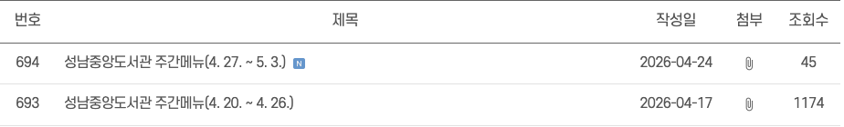
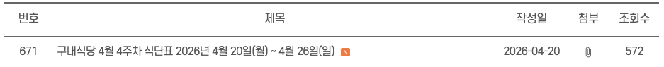
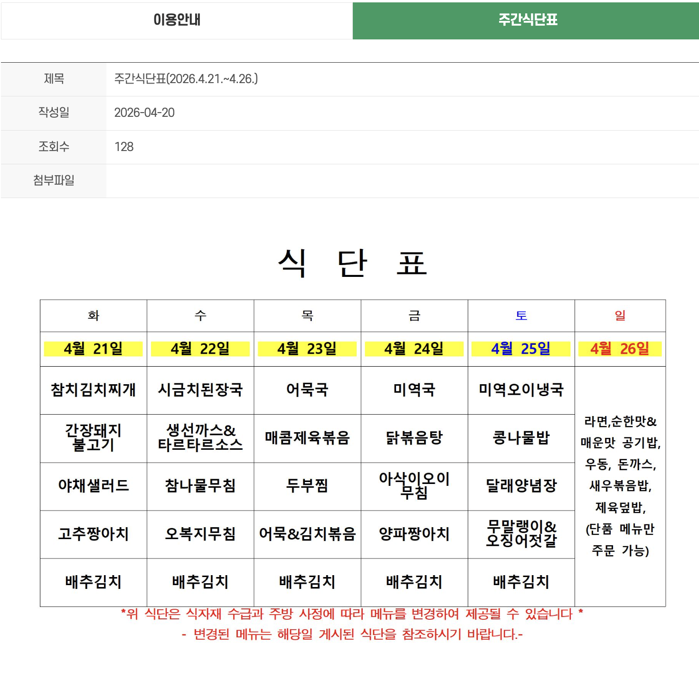
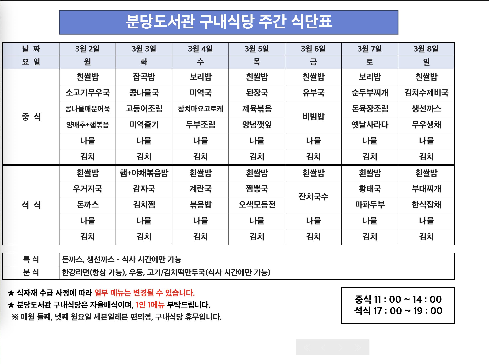
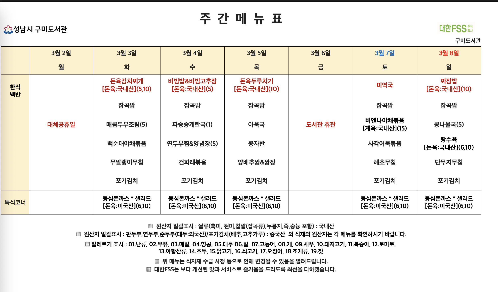
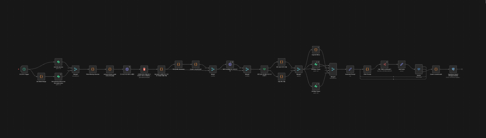
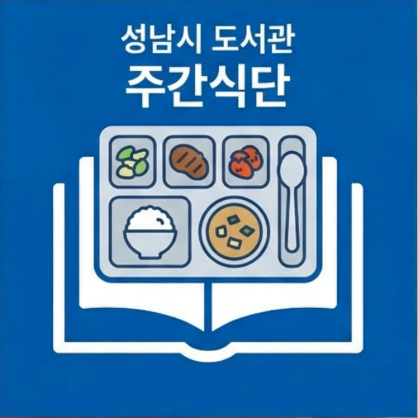
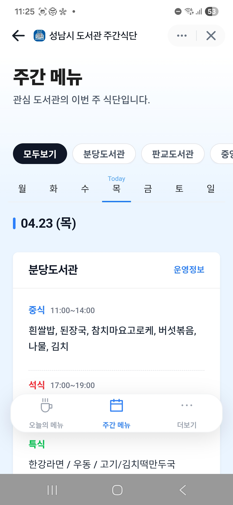
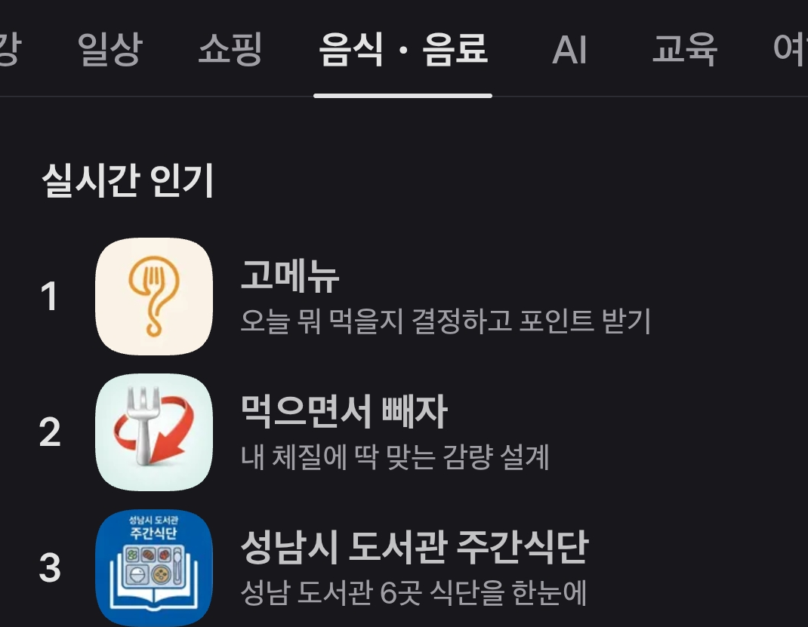
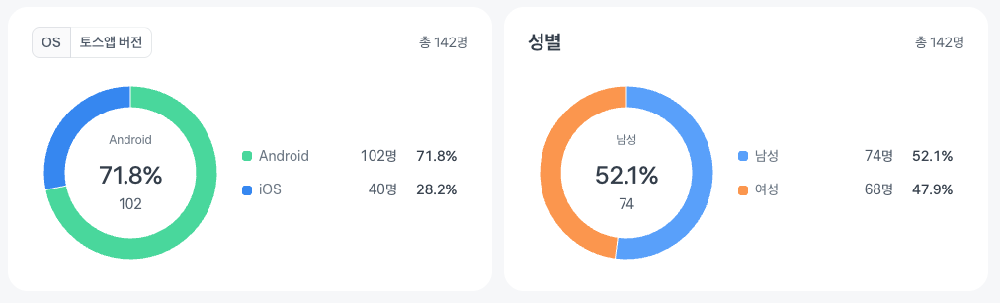

MAKERS · 2026 Spring
그래서
퇴근은
빨라졌나요?
'퇴근 메이커' 스터디 · 12주의 기록 · 4명의 결과물
INTRO · 01
퇴근 메이커, 한 문장으로
불필요한 반복 업무를 줄이고, 퇴근을 앞당긴다.
12주, 4명, 각자의 병목 — 그리고 각자의 해법
INTRO · 02
우리는 3개의 챕터를 거쳤다
Chapter 1
도구 익히기
n8n 강의·문서로 핵심 개념 학습
실제 워크플로 직접 구축할 수 있는 기본기
Chapter 2
내 반복 업무에 n8n
각자의 병목을 정의하고, n8n으로 해결해 본다.
노드 학습 + 실전 적용
Chapter 3
n8n이 아닐 수도 있다
모든 걸 n8n으로 풀려다 계륵을 만났다.
문제에서 다시 출발하자.
CHAPTER 3 · 전환
"도구가 아닌,
문제에서 시작하자."
— Chapter 2 끝자락, 우리가 내린 결론
INTRO · 04
판단 기준을 새로 썼다
n8n이 적합
- 단순 반복 업무
- 여러 SaaS 데이터 연동
- 워크플로 오케스트레이션
- 빠른 POC / 흐름 시각화
다른 도구가 적합
- 복잡한 비즈니스 로직 → 코드
- 개인화된 가이드 → LLM · Skill
- OS · 로컬 제어 → 네이티브
- 고품질 UI → 프로덕트 코드
PRESENTER 01
박정환
"내 업무 → 조직 지식 → AI 생태계"
에러 관리 자동화
개인 비서 봇
디자인 시스템 Agent Skills
01 / 박정환 · 프로젝트 ①
에러 UI가 제각각이다
에러마다 프론트 개발자가 UI 노출 로직을 개별 구현 →
UI 형식·버튼 액션 불일치,
코드 파편화, 기획자 요청마다 수동 대응
01 / 박정환 · 프로젝트 ①
해결: 메타데이터 + 단일 인터페이스
데이터 기반 제어 스키마
메시지 · UI 타입(Toast/Dialog) · 버튼 액션을 구글 스프레드시트로 데이터화
기획자가 전략을 직접 결정
기술적 추상화
파편화된 로직 → showError(errorCode) 단일 인터페이스
데이터에 따라 자동 렌더
UX 일관성 · 유지비 절감
01 / 박정환 · 프로젝트 ① 자동화
기획자가 직접 PR을 만든다
[Google Sheets] ── 기획자가 시트 수정 후 '코드 반영' 버튼 클릭
│
▼
[n8n Webhook] ── GCP API로 시트 조회 → CLI로 TS 객체 생성
│
▼
[GitHub Actions] ── 코드 커밋 + PR 자동 생성
│
▼
[Microsoft Teams] ── 알림
→ 기획자 주도의 운영 체계 완성
→ 개발자 공수 제거
02 / 박정환 · 프로젝트 ②
개인 비서 봇, Telegram 한 창에서
문제
캘린더 · 메일 · 문서가 앱마다 흩어짐. 중요 메일 누락 위험
해결
- n8n + Telegram 에이전트 — Calendar · Gmail CRUD를 명령으로
- 중요 메일 요약 자동화 — 스케줄 수집 · 키워드·발신자 선별 · 요약 전송
BONUS
'함수랑 산악회' 테크 세미나에서 'n8n 찍먹하기' 주최 + 실습
입문자도 기본 워크플로를 직접 구축할 수 있도록 역량 확산
03 / 박정환 · 프로젝트 ③
디자인 시스템에 AI Skill을 심었다
제품·저장소가 늘수록 가이드 이탈, 토큰 오용
그리고 이제는 AI 에이전트에게도 일관된 맥락을 전해야 한다.
해결
- 디자인 시스템 패키지에 Agent Skills 내장 배포
- 패키지 버전별 스킬 동봉 — 업데이트 혼선 제거
- 구현:
@TanStack/intent CLI
제공 스킬 · 총 11개
세팅 · 토큰 활용 · 컴포넌트 사용 ·
Chat/Chart 등 합성 컴포넌트 구축 · …
박정환 · 결론
자동화의 대상이
내 업무 → 조직 지식 → AI 에이전트 생태계로 확장됐다.
PRESENTER 02
설재혁
카카오톡 오픈채팅 자동응답 봇을 향한
6주간의 스토리
설재혁 · 01
의료인력 30~60대 × 반복 질문
카카오톡 오픈채팅방의 반복 질문을
CS 팀이 매번 수동으로 응답하고 있었고,
주말에는 대응을 하지 못하고 있었다.
"이걸 자동으로 받아줄 수 있을까?"
설재혁 · 02
6주, 여섯 번의 결정
WEEK 1기초n8n 워크플로우 구성· Google Sheets State · 1분 디바운싱
WEEK 2문제 인식Vertex AI Search 품질 한계 발견 · 판단 근거 부족
WEEK 3구조 개선단일 → 멀티 에이전트 오케스트레이션
WEEK 4데이터 품질비정형 → 정형 · PDF → md → JSONL
WEEK 5피벗 결정피드백 멸망 · 할루시네이션 100% · 방향 전환
WEEK 6완성NotebookLM Adapter Server · Chrome CDP 제어
설재혁 · 03 · 1~2주차
첫 플로우 — 트리거에서 응답까지
질문 → 메신저봇 → Webhook → Sheets(Get) → Sheets(Upsert) → Wait 1m → Code(시간 비교) → HTTP Request → Vertex AI Search → 답변 → 응답
설재혁 · 04 · 3주차
단일 에이전트 → 멀티 에이전트
AS-IS
단일 에이전트 + 단일 데이터 스토어
섞여 있는 컨텍스트, 품질 저하
TO-BE
마스터 에이전트 오케스트레이션
각각 스토어 · 서브 에이전트 분리
설재혁 · 05 · 4주차
원천 데이터가 답이었다
파이프라인
PDF → md → JSONL
포맷보다 중요한 것
- 노이즈 제거 (입/퇴장, 단순 "네")
- 의미 단위 청킹 (300~800자)
- 메타데이터 (날짜 · 질문자 · 태그)
- 일관된 구조 (
#, ##, ###)
Vertex AI Data Store 스펙
{
"id": "...",
"content": {
"rawBytes": "<base64>",
"mimeType": "text/plain"
},
"json_data": "..."
}
이 스펙 아니면 업로드 자체가 안 됨
설재혁 · 06 · 5주차
피드백이 멸망했다
3일 내부 테스트. 결과는 극단적이었다.
1점의 이유 · 100%
단 하나의 예외도 없이 "잘못된 답변(할루시네이션)"
설재혁 · 07 · 할루시네이션 원인
원본 데이터의 구조적 결함
카카오톡 채팅 데이터는 이미 검증된 답변들이 오간,
우리가 가진 가장 가치 있는 원천 데이터였다.
→ 그렇기 때문에 과거 유사 질문의 답변을 추출해 재활용하는 것이 핵심이라고 생각했다.
하지만 원본 데이터는 단순 시간순 나열뿐이었다.
시도한 질문, 답변 매핑 전략
- v1: 시간 범위 내 staff 발화에서 답변 후보 추출
- v2: anchor(가장 가까운 participant turn) 이후 staff turn만 후보
→ 둘 다 100% 보장 불가능
→ 근본적인 해결 불가
PIVOT
"만들 수 없다면,
빌려 쓰자"
→ 이미 검증된 NotebookLM 챗봇을 그대로 쓴다.
→ Chrome CDP로 브라우저를 직접 제어한다.
설재혁 · 08 · 6주차
NotebookLM Adapter Server
[EC2]
n8n (워크플로우)
│
▼
NotebookLM Adapter (로컬 서버)
│ Chrome CDP
▼
Headless Chrome ──▶ NotebookLM 챗봇 ──▶ 답변
동시성
요청당 30초~1분 → Race Condition → Promise Lock으로 직렬화
계정 분리
guest 권한 Selector 미동작 → 편집자로 승격
운영 관측
EC2 접속 불가 → noVNC 원격 GUI
SHIPPED
04·22
2026년 4월 22일(수)
6주간의 설계·구현·검증·피벗을 거쳐 실제 운영 환경에 도입
설재혁: "만약 퇴근메이커가 없었다면, 이 날은 한참 더 멀리 있었을 것이다."
설재혁 · 결론
내가 배운 두 가지
① 품질 ≠ 아키텍처
품질은 모델·아키텍처가 아니라 원본 데이터의 구조적 무결성이 결정한다.
② 피벗도 엔지니어링
불가능을 고집하기보다 검증된 시스템을 빌려 쓰는 피벗이 진짜 엔지니어링이었다.
PRESENTER 03
김경태
성남 도서관 주간 식단표 자동화
앱인토스 배포까지.
김경태 · 01
문제점: 6개 도서관, 6개의 공지 포맷

성남중앙도서관 · 4/24 업로드

분당도서관 · 4/20 업로드
- 각 도서관이 서로 다른 포맷으로 식단표를 공지: 이미지, 엑셀파일 혼재

웹 게시판에 이미지 기재

엑셀파일

엑셀파일
김경태 · 02 · 아키텍처
n8n 워크플로우 파이프라인

[n8n Scheduler] 3시간마다 트리거
↓
크롤링 + HTML 파싱 이번 주 게시물만 필터
↓
LLM 정제 (Claude Opus) 비정형 → 정형 JSON
↓
[Supabase] 중복 방지 ID 설계
김경태 · 03 · 핵심 구현
문제 해결
문제 ① 업로드 시간 제각각
사람이 직접 확인할 필요가 없어야 한다
[n8n Scheduler] 3시간마다 자동 폴링
│
▼
[Supabase] 중복 방지 ID로 재처리 차단
│
▼
[React Router v7 앱] 6개 도서관을 한 화면에
문제 ② 6개의 서로 다른 포맷
웹 게시판 이미지 · 엑셀 첨부 · 혼합 게시물
크롤링 + HTML 파싱 포맷별 분기로 링크 추출
│
▼
LLM 정제 (Claude Opus) 비정형 → 정형 JSON
SHIPPED · 앱인토스
"별도 앱 설치 없이, 매일 여는 앱 안에서"
성남시 도서관 주간식단

토스 미니앱(앱인토스)으로 실제 배포 완료
진입 장벽 zero, 자연스러운 일상 속 자리

=>


PRESENTER 04
이재석
n8n × Hammerspoon,
경계 깨기
이재석 · 01
n8n은 SaaS는 엮는데, 내 PC는?
SaaS끼리는 매끄럽게 엮지만,
내 로컬 PC의 영역엔 손대지 못한다.
① 파일시스템
로컬 파일·폴더 읽기·쓰기,
Finder·Obsidian vault 연동 불가
② Shell Script
내 PC에서 명령 실행,
앱 실행·포커스 제어 불가
③ OS 이벤트
뚜껑 열림·WiFi 전환 같은
시스템 이벤트 감지 불가
THESIS
n8n은 Hammerspoon을 만나
로컬 OS 자동화 엔진이 된다.
이재석 · 02
Hammerspoon, 한 줄로
macOS를 스크립팅하는 Lua 런타임.
"브라우저에서 JS로 DOM을 조작하듯, Lua로 macOS를 조작한다."
로컬 파일·앱 제어
파일 경로로 Finder 열기,
앱 포커스·창 레이아웃 조작
시스템 이벤트 훅
뚜껑 열림·화면 잠금·
WiFi 전환 같은 OS 이벤트
커스텀 URL Scheme
hammerspoon://…
외부에서 로컬 기능 트리거
이재석 · 03 · Case
> Demo
Morning Brief
"어제 어디까지 했더라?" — 매일 아침 이 질문부터 시작한다.
캘린더 열고, Linear 열고, 어제 커밋 훑고, 중단점 메모까지
[n8n Cron · 매일 09:00]
│
▼
[Code × 4] 중단점 · 캘린더 · Linear · Git
│
▼
[Code] 브리핑 조립 — 수집 결과 통합
│
▼
Execute Command: hammerspoon://brief?type=morning
│
▼
[HS] Webview 렌더 — 중단점 / 일정 / 이슈 / 어제 커밋
│
▼
링크 클릭 → hammerspoon://jump (tmux + nvim) · Calendar · Linear
이재석 · 04 · Extra
그 외의 워크플로들
Vault Health Report
Obsidian vault 구조 스캔 → 정리 제안
Git Worktree 자동 관리
PR 머지되면 로컬 worktree 자동 정리
주요 폴더 동기화
클라우드 / git으로 정기 동기화
일상의 모든 반복이 후보다.
이재석 · 결론
n8n을 써보고 내린 결론
한계
- 복잡해질수록 부적합
- 코드로 쓰는 게 편한 경우가 더 많음
- 결국 코드노드 덕지덕지
빛나는 영역
- 빠른 POC, 흐름 시각화
- 노드 교체 쉬움
- SaaS 엮기는 압도적
오케스트레이션 × 로컬 자동화. 경계를 깨면 새 가능성이 열린다.
한 줄로 요약
네 사람 모두
도구가 아닌
문제에서 시작했다.
RETRO
우리가 얻은 것
- n8n이 맡아야 할 역할과 한계를 명확히 이해했다.
- 어떤 문제를 n8n으로, 어떤 건 다른 도구로 풀지 스스로 판단할 수 있는 기준이 생겼다.
- 이슈와 팁을 서로 공유한 덕분에 실무 적용 역량이 강화됐다.
- 스터디와 별개로 현업 고민과 해결 사례를 나누며 업무 환경을 개선했다.
OUTRO
퇴근은 조금 더
빨라지는 중.
우리는 여전히 문제를 찾고,
도구를 고르고,
위임하고 있다.
Thank you.
박정환
설재혁
김경태
이재석
퇴근 메이커 · 2026 Spring